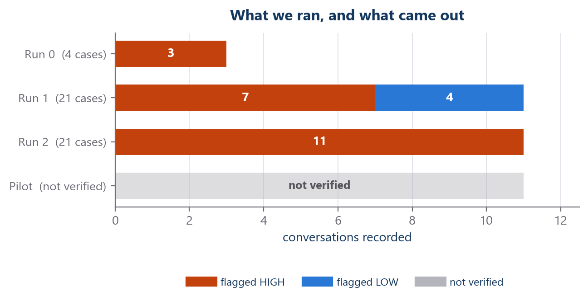
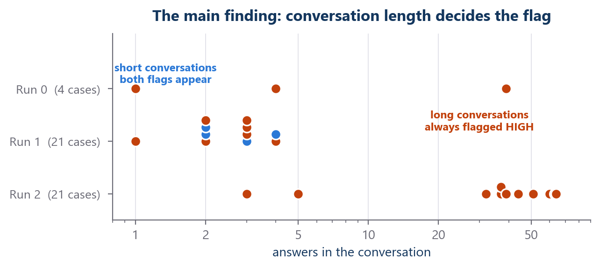
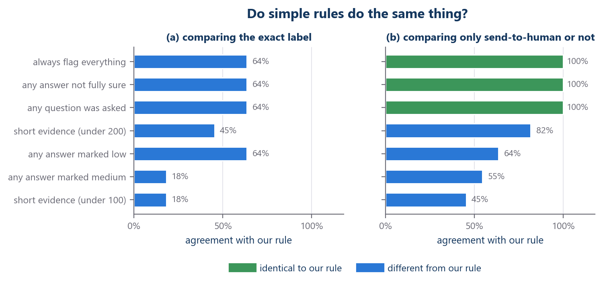
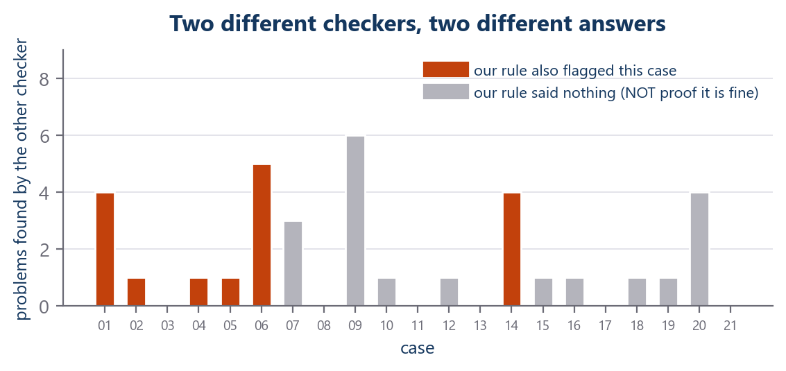

Can a simple rule pick which AI conversations a person should check?
VEGO-AI · Study 1 · a plain-language summary of everything we ran
Why we did this
Several AI agents talk to each other to build a model. Sometimes an agent is unsure. We want to know: can an automatic rule pick out the conversations a person should look at, so a person does not have to read all of them?
How it works, end to end
1Public data
21 airline cases
3Recording
every question saved
4The rule
reads the recording
Words we use, in plain language
ConversationOne agent asks, another answers, until they stop. We recorded 25.
The ruleA fixed check written down before we saw any result. It never changed.
Flag HIGHThe rule says a person should look. It does not mean an error.
Flag LOWA weaker signal. Still sent to a person.
BaselineA very simple rule we compare against, to see if ours adds anything.
Not verifiedWe cannot prove it from the published files, so we do not report it.
What we ran

Three runs we can verify. Each bar is one run; each block is one conversation. The grey bar is a pilot we cannot verify from the published files, so no numbers are shown for it.
The main finding

Each dot is one conversation. Short ones get both flags. Long ones are always flagged HIGH. Length is not something we controlled - it came out differently in each run.
What we built and what we fixed
Used every case, not a sampleAll 21 cases, so nobody can ask why we picked those.
Checked the data is genuineRe-downloaded it; every file matched its fingerprint exactly.
Logged every callSo the cost can be checked, not just believed.
Turned off silent retriesSo the spending limit counts real calls.
Compared in two waysThis found a claim of ours that was wrong.
Removed an unproven resultA pilot we cannot verify was taken out of the report.
Every number here is recomputed from the saved recordings. The rule was never changed.
The baselines - the most important test

We compared our rule against very simple rules. Left: does the simple rule give the exact same label? Right: does it send the same conversations to a person?
- Left panel (a): no simple rule gives the same exact label as ours.
- Right panel (b): “always flag everything” sends exactly the same conversations to a person - 100%.
- So our rule looks different only when comparing labels, not when comparing who gets sent to a person.
Two checkers, two answers

The system already has another checker that looks at single sentences. It found problems in cases where our rule said nothing. Neither one is the truth - they look at different things.
What we can say · What we cannot say
What we can say
- The pipeline runs end to end; everything is recorded and hash-checked.
- Long conversations are almost always flagged HIGH. That is how the rule is built.
- At the “send to a person” level, a rule that flags everything does the same as ours.
- Cost is small: $1.96 for all three runs.
What we cannot say
- We cannot say a flag was correct. Nobody has judged the conversations yet.
- We cannot say it saves work. Nobody measured review time.
- No accuracy, no benefit, no comparison against other systems.
- The pilot run is not verified, so it is not counted anywhere.
Current status
DESCRIPTIVE RULE BEHAVIOUR ONLY - NOT READY FOR A SCIENTIFIC CONCLUSION
Next step: two independent people rate the conversations without seeing the rule's flag. Everything is built and waiting for that.
Every run, side by side
| Run | Status | Conversations | HIGH | LOW | Sent to a person | Cost |
|---|
| Run 0 | OK | 3 | 3 | 0 | 3 | $0.13 |
| Run 1 | OK | 11 | 7 | 4 | 11 | $0.36 |
| Run 2 | OK | 11 | 11 | 0 | 11 | $1.60 |
| Pilot | not verified | - | - | - | - | - |
| Test data | no AI used | - | - | - | - | - |
We never add these rows together. Each run used a different setup, so a combined total would describe a run that never happened.